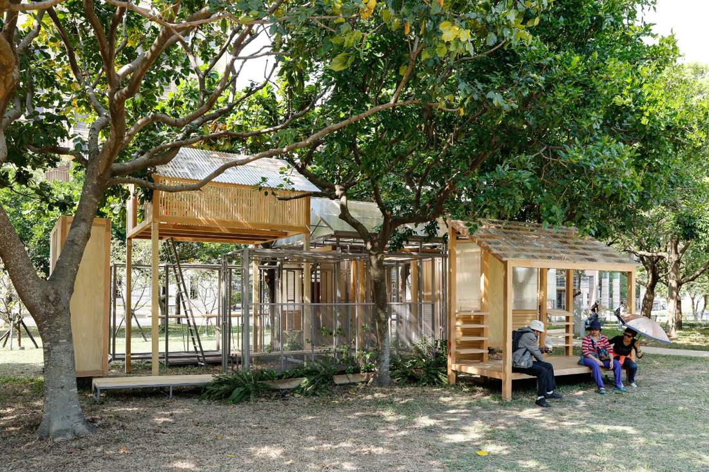
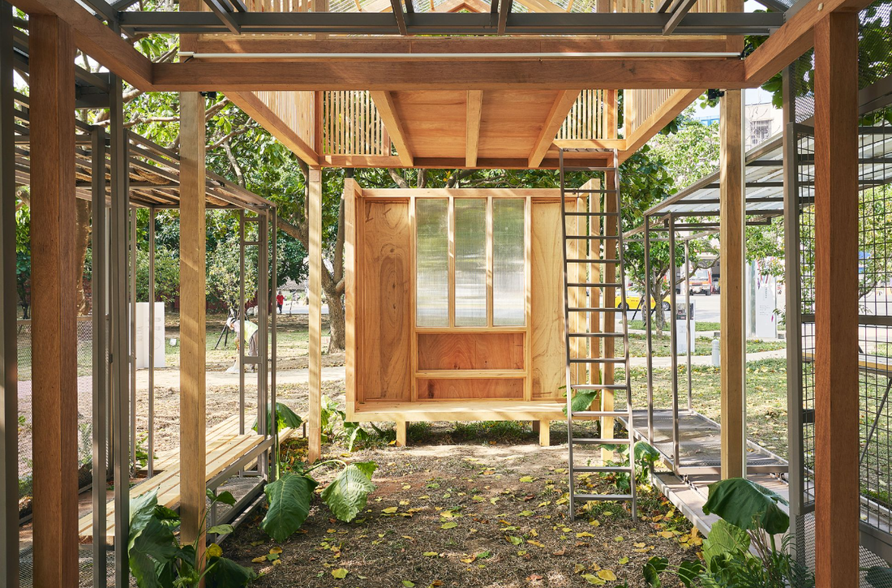
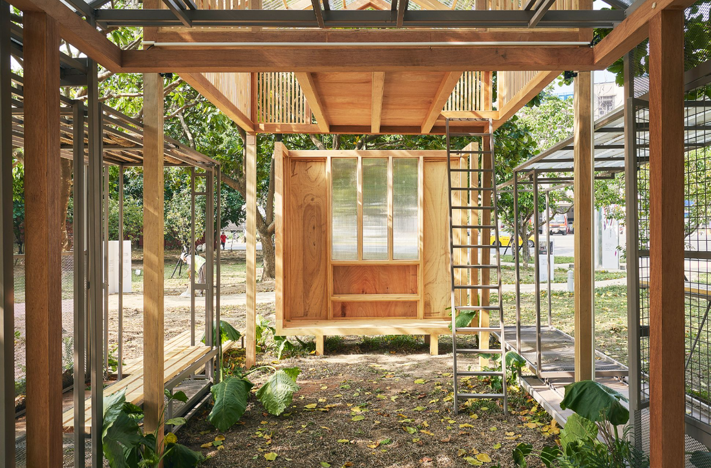

Hsinchu Pavilion
Year
2018
Type
Community
Residential
Landscape
Residential
Landscape
Team
Wong Wei Ping
Tet Tat Sing
Alex Tan
Tet Tat Sing
Alex Tan
Location
新竹公園 / Hsinchu Park
This project speculates the basic necessities and the potential modes of a dwelling by using the idea of ‘Core’. Core is the simplest form and a singular entity that represents the simplest programme, consisting only the entrance, living area, room and toilet. By exploding these spaces like an axonometric drawing, the space is now appeared as a cluster of singular units with their own distinctive programme, having negative spaces in between.
The ‘explosion’ of core negative space is being captured in physical form, allow inhabitants to have more possibilities of dwelling. Archiblur, a Taiwanese Architecture firm collaborated throughout the design process to explore and actualize this project together as one of the architecture installation exhibited at Hsinchu Park Follies 2018. (實構築2018-新織理)
The ‘explosion’ of core negative space is being captured in physical form, allow inhabitants to have more possibilities of dwelling. Archiblur, a Taiwanese Architecture firm collaborated throughout the design process to explore and actualize this project together as one of the architecture installation exhibited at Hsinchu Park Follies 2018. (實構築2018-新織理)
 


[核] - 帶有多重意義; 它既是core - value, 也是nucleus - basic structure 和 seed - 催生 / 衍生。
[核]是用來探討最根本的棲居以及各種衍生的可能。
⟪對話錄⟫
- 始於窩工房黃偉斌、鄭達馨和Alex陳世杰之間的對話 :
‘新竹想做甚麼？’
‘我們不要做‘建築’啦，做一些怪怪的東西，例如廁所....
在戶外上的廁所....完完全全的戶外。’
‘可不可以做個引起人們好奇心的建築？’
[核]是用來探討最根本的棲居以及各種衍生的可能。
⟪對話錄⟫
- 始於窩工房黃偉斌、鄭達馨和Alex陳世杰之間的對話 :
‘新竹想做甚麼？’
‘我們不要做‘建築’啦，做一些怪怪的東西，例如廁所....
在戶外上的廁所....完完全全的戶外。’
‘可不可以做個引起人們好奇心的建築？’
The idea of core - the core value and the core structure.
This project speculates the basic necessities and the potential growth of a dwelling.
[Dialogue]
A conversation between Wong Wei Ping, Tey Tat Sing and Alex Tan:
'what should we do for Hsinchu?'
'Let's not restrict ourselves in just doing the typical architectural buildings.
Perhaps we could look into space like toilet. Not a typical toilet but an outdoor toilet.
An outdoor space.'
'Can we build an architecture that spark curiosity?'
This project speculates the basic necessities and the potential growth of a dwelling.
[Dialogue]
A conversation between Wong Wei Ping, Tey Tat Sing and Alex Tan:
'what should we do for Hsinchu?'
'Let's not restrict ourselves in just doing the typical architectural buildings.
Perhaps we could look into space like toilet. Not a typical toilet but an outdoor toilet.
An outdoor space.'
'Can we build an architecture that spark curiosity?'

‘機會難得，應該做些我們相信的architecture,
比如我們常講的re-program architecture。
有時會想，身為建築師，在設計的時候，
在program方面應該參與多深？’
‘拿最近的露營來說，有甚麼想法？’
‘露營的時候，我們擁有的是最小最小的空間，
只足夠拿來睡覺。於是我們用戶外來當廚房、
當客廳、河流當泳池。當我們擁有很小時，
反而打破空間的侷限，還有想像。’
比如我們常講的re-program architecture。
有時會想，身為建築師，在設計的時候，
在program方面應該參與多深？’
‘拿最近的露營來說，有甚麼想法？’
‘露營的時候，我們擁有的是最小最小的空間，
只足夠拿來睡覺。於是我們用戶外來當廚房、
當客廳、河流當泳池。當我們擁有很小時，
反而打破空間的侷限，還有想像。’
'I think it's a great opportunity for us to design something that we truly believe in. For example, we always talk about re-programme architecture. Sometimes I always ask myself, what is the extend of us, as an architect to take part in thinking and creating the programme of the architecture’
'What do you think about the idea of 'camping'? '
'The idea of a camp as a dwelling actually helps the dweller to think of other possibilities of a living space. With a restriction of space in the camp, other daily activities such as cooking and living are being brought out to outdoor space. The river could even be our swimming pool! Back when we were young, everything is possible with imagination. Every space could be something and everything could be a space! Just with simple boxes, we could build house, tunnels or even a fort'
'What do you think about the idea of 'camping'? '
'The idea of a camp as a dwelling actually helps the dweller to think of other possibilities of a living space. With a restriction of space in the camp, other daily activities such as cooking and living are being brought out to outdoor space. The river could even be our swimming pool! Back when we were young, everything is possible with imagination. Every space could be something and everything could be a space! Just with simple boxes, we could build house, tunnels or even a fort'

‘我們就做一個最簡單的房子，給核心家庭。
只有玄關，客廳，房間和廁所。回歸房子基本的
program，然後讓它`炸`開來，讓這些program單獨成立。’
‘怎樣`炸`開來？’
‘就好像我們畫(建)一個真正的exploded isometric
(爆炸圖)，再用虛線把個別的program連結起來，
虛線就是我們想像力的具體。`炸`開來後會出現`負空間`。
虛線的部分就是虛建築，正是我們夥伴archiblur的強項。’
只有玄關，客廳，房間和廁所。回歸房子基本的
program，然後讓它`炸`開來，讓這些program單獨成立。’
‘怎樣`炸`開來？’
‘就好像我們畫(建)一個真正的exploded isometric
(爆炸圖)，再用虛線把個別的program連結起來，
虛線就是我們想像力的具體。`炸`開來後會出現`負空間`。
虛線的部分就是虛建築，正是我們夥伴archiblur的強項。’
'In that case, let's go back to the basic. We can design a core house with the simplest programme, consisting only the entrance, living area, room and toilet.
Then… we will explode it! Instead of having all of them connecting together, each space is now appeared as a singular unit with its own distinctive programme.'
'How should we actually explode them?'
'Let's imagine a typical architectural exploded axonometric drawing. The building is exploded into a few parts, forming negatives spaces in between and the dotted lines are the indication of these parts joining together as a complete whole. Here is where our partner, Archiblur will join force to design these negatives spaces and the dotted lines. Designing negative space has always been Archiblur's forte.'
Then… we will explode it! Instead of having all of them connecting together, each space is now appeared as a singular unit with its own distinctive programme.'
'How should we actually explode them?'
'Let's imagine a typical architectural exploded axonometric drawing. The building is exploded into a few parts, forming negatives spaces in between and the dotted lines are the indication of these parts joining together as a complete whole. Here is where our partner, Archiblur will join force to design these negatives spaces and the dotted lines. Designing negative space has always been Archiblur's forte.'

‘如果說實建築是上聯，那虛建築就是下聯。虛空間和實空間在這案子是對等的。窩工房處理實建築，ArchiBlur處理虛建築。於是我們兩個團隊於兩地(台灣和馬來西亞)各別發展自己的那一塊，整個設計案就像是個設計上的對話，接力和角力。’
於是我們選了個現場有樹木的基地，讓樹木成為結合實、虛空間的媒介。
於是我們選了個現場有樹木的基地，讓樹木成為結合實、虛空間的媒介。
'If we describe positive space as a prologue, then the negative space will be the epilogue of an architecture that complements one another. Tetawowe will be designing the positive space, whereas Archiblur will be designing the negative space. This will be an interesting conversation between both of the firms from different countries, between Malaysian firm and Taiwanese firm. It will be a relay race between us, where the overlapping and layering of our thoughts will be a strong foundation for this project'
Then, we chose a site with some existing trees, where these trees act as the negative space of our design.
Then, we chose a site with some existing trees, where these trees act as the negative space of our design.
×